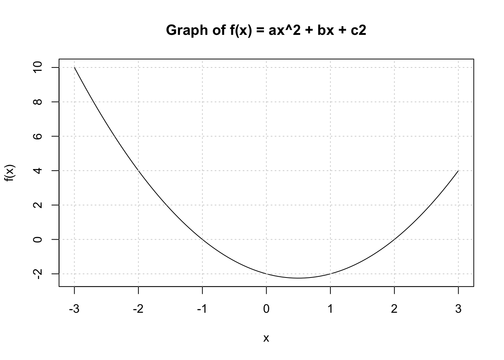
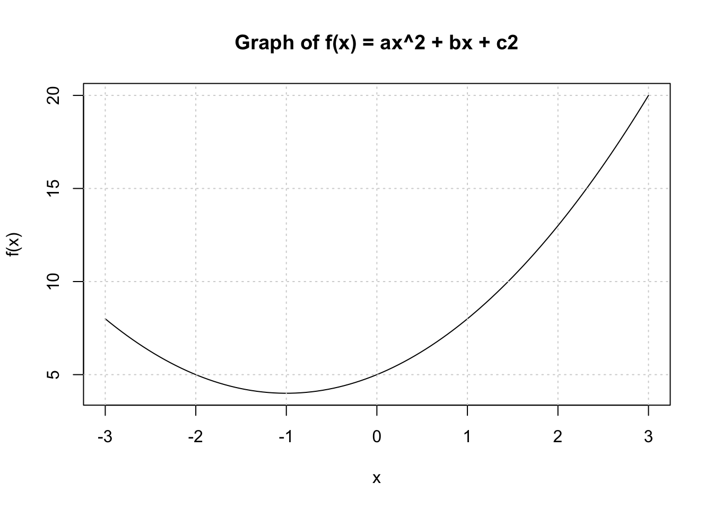
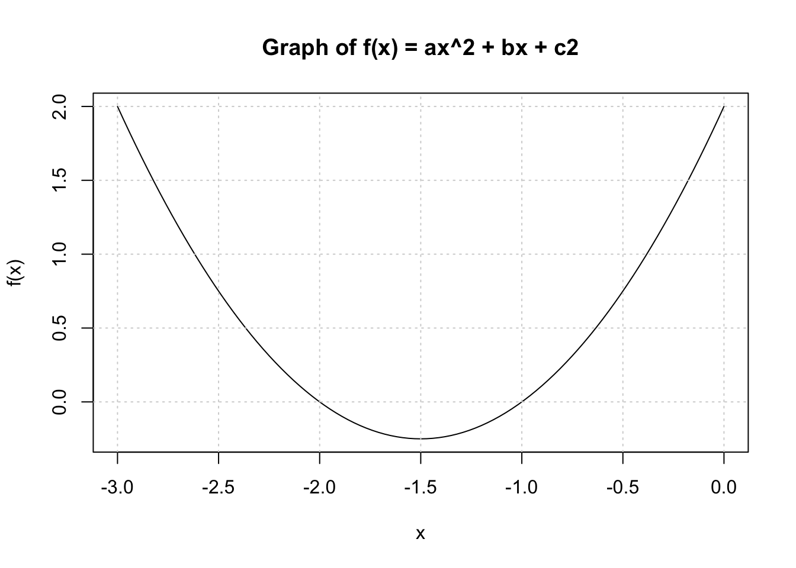

Define variables \(a=1\), \(b=-1\), \(c=-2\) and print out the solutions to \(f(x) = ax^2 + bx + c = 0\). Do not report complex solutions, only real numbers. Avoid using the variable name c as it is a reserved function in R. Show the code and the answer.
# Define function to solve for a, b, and c2solve_quadratic <-function(a, b, c2) {# Calculate discriminant discriminant <- b^2-4*a*c2# Check if the discriminant is non-negativeif (discriminant >=0) {# Calculate the two real solutions x1 <- (-b +sqrt(discriminant)) / (2*a) x2 <- (-b -sqrt(discriminant)) / (2*a)# Print the solutionscat("The solutions are:", x1, "and", x2, "\n") } else {cat("There are no real solutions.\n") }}# Solve for a=1, b=-1, c=-2solve_quadratic(1,-1,-2)
The solutions are: 2 and -1
Problem 2
Show a graph of \(f(x)\) versus \(x\) for \(x \in (-3,3)\). Do not show the code, only the graph.

Problem 3
Generate a PDF report.
Problem 4
Erase the PDF report and reproduce it but this time using \(a=1\), \(b=2\), \(c=5\).
There are no real solutions.

Problem 5
Erase the PDF report and reproduce it but this time using \(a=1\), \(b=3\), \(c=2\). Change the range of x to range that clearly shows the roots.
The solutions are: -1 and -2

Problem 6
Create a markdown page with the results for this last set of values, but this time showing the code.
# Solve for and plot a=1, b=3, c=2solve_quadratic(1,3,2)
The solutions are: -1 and -2
plot_quadratic(1,3,2,-3,0)
Problem 7
Submit the markdown page, including all necessary auxiliary files, and quarto file to a GitHub repo. Make sure the markdown document renders.